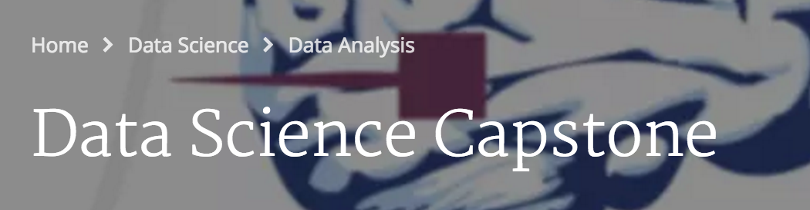

Coursera Capstone Project 리뷰
5/Jun 2016

지난 4월에 Capstone Project를 끝으로 Data Science Specialization 과정을 끝냈습니다. 약 1년(정확히는 11개월; Capstone Project는 다른 과목들과 다르게 매달 있는 것이 아니라 1년에 2번 정도 과목이 열리는 것 같고 이번에는 3월에 열렸습니다)이 걸렸습니다. 주제는 Swift key와 같이 하는 Next word prediction 입니다(주제가 바뀌기를 내심 기대했지만 바뀌지 않았습니다 -0-;).
이번 과목의 특징들을 몇가지 말씀드리면, 첫번재로 Capstone Project는 다른 과목들과 다르게 약 2달간 진행됩니다. 제출 결과물도 3가지로 지금까지 R을 통해 배웠던 TOOL은 전부 써먹게 됩니다. 과목마다 제출했던 report를 포함해서 shiny를 통해 웹앱을 만드는 것과 R presenter를 사용해서 프로젝트 결과물을 요약하는 것 등 과정에서 소개한 tool은 전부 사용하게 됩니다. Capstone Project를 참여하려면 지난 과목들을 전부 이수해야 하기 때문에 어려운 부분은 없구요.
또 다른 특징은 과제의 목표와 제출 방법만 주어지고 어떤 알고리즘을 써야 하는지, 어떤 분석 방법으로 try해야 하는지 등은 보여주지 않습니다. 어떠어떠한 알고리즘을 사용할 수 있다 정도로 알고리즘의 이름 정도를 소개해주고, 결과물에 어떤 방식을 사용할지는 본인에게 달려 있습니다.
게시판이 많이 활성화되어 있습니다. 이번 프로젝트는 다소 막막하기도 하고 결과물을 내기 위한 다양한 방법들이 있다 보니 내가 하고 있는 것이 맞는 방향인지 궁금할 때가 많이 있었습니다. 그래서 그런지 게시판에서 사람들과 퀴즈의 풀이나 과제의 진행방향에 대해서 논의가 활발했습니다. 다른 MOOC들도 마찬가지겠지만 Coursera에서 학습하면서 가장 만족스러운 부분이 학습자들 간의 review와 discussion이 아닐까 싶습니다.
Capstone Project 과목은 특히 퀴즈가 어려웠던 거 같습니다. 문장의 일부가 나오고 그 다음에 나올 만한 단어들이 보기로 나오는데, 프로젝트 완성물 제출 한참 전에 Next Word Prediction 앱의 알고리즘을 만들어야 풀 수 있는 문제입니다. 알고리즘으로는 보기의 단어들이 나타나지 않아서 영어의 문맥을 파악해서 눈치껏 풀어보려고 해도 결과가 신통치 않았습니다. 퀴즈는 여러번 풀 수 있기 때문에 여러번 시도한 후에 답을 맞출 수는 있겠지만, 어떻게 알고리즘을 만들어야 답에 해당하는 단어가 예측되는지는 해결하기 힘들었습니다.ㅠㅠ
저는 최종 결과물을 가장 쉬운 모델이라는 *Back-off model*로 만들었습니다(좀 고차원적인 모델을 만들고 싶었지만 일과 대학원 수업에 MOOC까지 동시에 병행하기에 시간이 모잘랐다는 핑계를..ㅠㅠ). 구글링을 해보면 베이지안을 적용한 경우도 있었습니다. 결과적으로 저는 train set 정확도 50.6%, test set 정확도 21.5% 라는 몹쓸 결과를 보였습니다. -0-; [제 Web app 링크]
알고리즘만 만들고 나면 결과물 webapp을 만드는 것은 쉬울 줄 알았습니다. 그런데 고려해야 할 것이 shinyapps.io라는 사이트에서 추천 단어가 표시되는 lead time 이였습니다. 무료로 제공되는 계정이기에 서버자원도 속도가 빠르지 않았기에 sample data를 크게 잡을 수 없었습니다. text 파일로 제공되는(약 500mb 정도) raw data를 전부 사용할 수 없기 때문에 sampling을 해야 했는데 알고리즘의 속도와 정확도의 균형을 맞추면서 어느 수준의 sampling을 해야 하는지 고민해야 했구요. 이 과제의 파트너사인 swift key를 비롯해 스마트폰의 몇메가 수준의 키보드 앱들은 어떤 식으로 알고리즘이 구현되었는지 궁금할 따름입니다.
Capstone Project가 끝나갈 무렵, 게시판에는 수강생들끼리 링크드인 친구 추가 및 skill endorsing 을 하는 글도 생겨났습니다. 저도 은근슬쩍 끼어서 링크드인에 수료증 링크도 해보고 누군지도 모르는 외국인 수강생과 Connection도 해봤습니다. 누군가 알아주길 바라는 마음이 없던건 아니였지만 가장 큰 기쁨은 제 자신에 대한 만족과 뿌듯함인 것 같습니다. 1년여의 과정을 스스로 시작해서 스스로 완결한 것, 또다른 공부를 시작해보려는 의욕과 자신감을 갖게 된 것이 첫 Coursera 과정을 완료하면서 얻은 가장 큰 수확이 아닐까 싶습니다.
Andrew Ng 교수의 Machine Learning 과목이나 Udacity의 Data Science 과목에 도전하는 것이 MOOC의 다음 목표가 될 것 같네요.